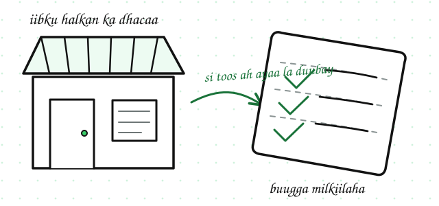
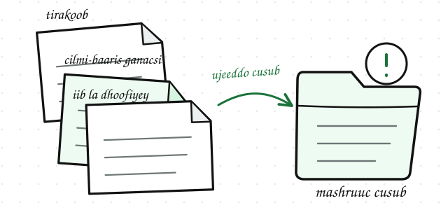
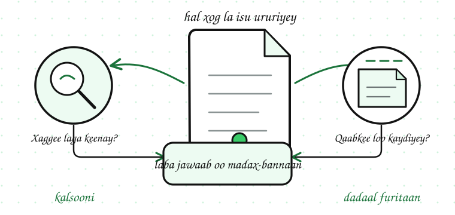

Ilaha iyo Qaababka Xogta
Waxaad awoodi doontaa inaad garato halka xogta la isu ururiyey (dataset) laga keenay, qaabka (format) loo kaydiyey, iyo inay tahay xog si toos ah loo ururiyey (primary data) ama xog hore loo ururiyey (secondary data).
Dulmar
Qof aad wada shaqaysaan ayaa kuu soo diray fayl ay ku jirto xog la isu ururiyey (dataset). Ka hor intaadan isticmaalin, waxaad u baahan tahay inaad ogaato halka xogta laga keenay, in isha lagu kalsoonaan karo, iyo sida faylka loo furayo.
Arrimahaas waxaa goʼaamiya isha xogta (data source) iyo qaabka xogta (data format).
Ilaha Caamka ah ee Xogta (Common Data Sources)
Isha xogta (data source) waa halka ay xogtu asal ahaan ka timid. Xogta waxaa loo ururin karaa habab kala duwan:
Isha xogtu waxay saamaysaa tayada xogta (data quality). Xog laga helay nidaam ganacsi la isku halayn karo badanaa way ka nidaamsan tahay xog gacanta lagu geliyey jadwal (spreadsheet).
Xog Si Toos ah iyo Xog Hore loo Ururiyey
Xog si toos ah loo ururiyey
Xog si toos ah loo ururiyey (primary data) waa xog si toos ah loogu ururiyey ujeeddo gaar ah. Tusaale ahaan, milkiile dukaan ayaa buug ku qora iibka maalin kasta, ama iskuul ayaa sameeya sahamin u gaar ah.

Xog hore loo ururiyey
Xog hore loo ururiyey (secondary data) waa xog uu qof kale hore u ururiyey, loona isticmaalayo ujeeddo cusub. Tusaalooyinka waxaa ka mid ah warbixinnada tirakoobka dadweynaha, cilmi-baaris ganacsi, ama xog iib laga soo saaray waax kale.

Xogta si toos ah loo ururiyey badanaa waxay si dhow ula xiriirtaa suʼaashaada. Xogta hore loo ururiyey waxay kuu badbaadin kartaa waqti, laakiin waa inaad hubisaa inay ku habboon tahay baahidaada iyo in isheeda lagu kalsoonaan karo.
Qaababka Xogta (Data Formats)
Qaabka xogta (data format) waa sida xogta loo kaydiyo ama loo wadaago.
Bilowga, waxaad inta badan arki doontaa jadwallada (spreadsheets), faylal CSV ah, iyo miisaska database-ka.
Muhiimadda Isha iyo Qaabka Xogta
Ka hor intaadan xog la isu ururiyey (dataset) isticmaalin, iska weydii laba suʼaalood:

Il la isku halayn karo mar walba ma laha qaab fudud, qaab fududna mar walba ma xambaarsana xog tayo leh. Labadan suʼaalood way kala madax-bannaan yihiin, waana sababta ay muhiim u tahay inaad labadaba isweydiiso.